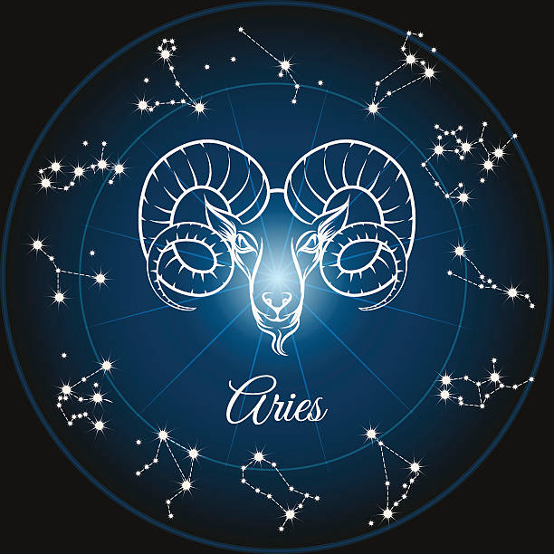

♈ Ariete: il segno della primavera
Con l'arrivo della primavera si apre il ciclo dello zodiaco con il segno dell'Ariete. Simbolo di energia, iniziativa e coraggio, l'Ariete rappresenta l'inizio di nuovi percorsi e nuove avventure.

Caratteristiche principali
- Grande energia e spirito di iniziativa
- Personalità coraggiosa e determinata
- Amore per le sfide e l'avventura
- Spontaneità ed entusiasmo
- Forte leadership naturale
Curiosità sul segno
L'Ariete è un segno di fuoco ed è governato dal pianeta Marte, simbolo di forza, passione e azione. Le persone nate sotto questo segno amano mettersi alla prova e iniziare nuovi progetti con entusiasmo.
Non è raro trovare tra gli Ariete personalità molto dinamiche, competitive e sempre pronte a guidare gli altri.
Messaggio delle stelle
Questo mese invita tutti a prendere esempio dall'Ariete: avere il coraggio di iniziare qualcosa di nuovo, seguire le proprie passioni e non avere paura di osare.